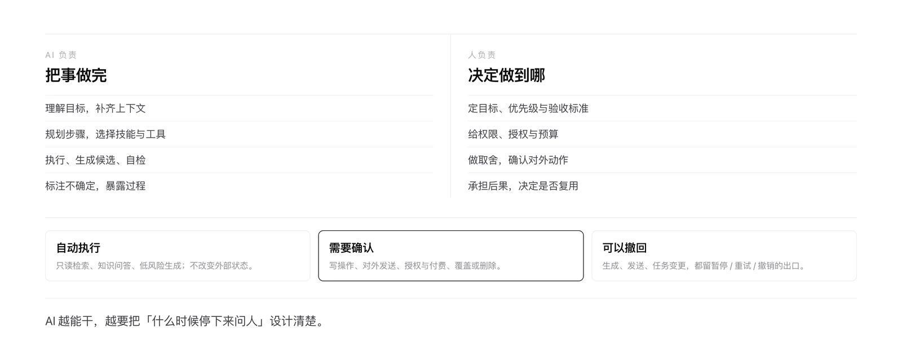
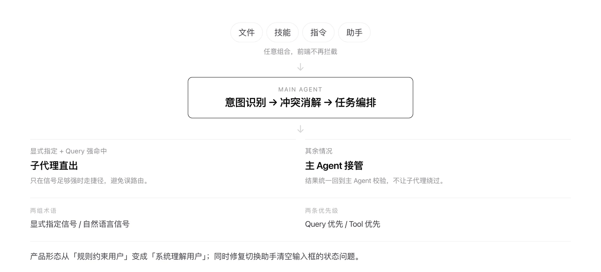
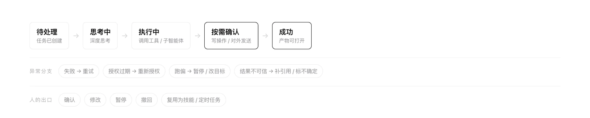
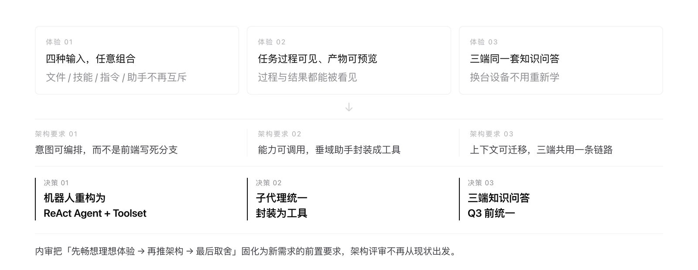
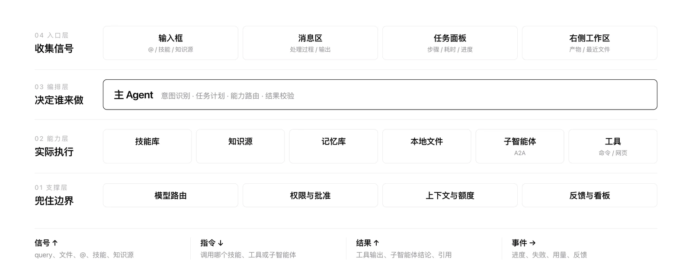
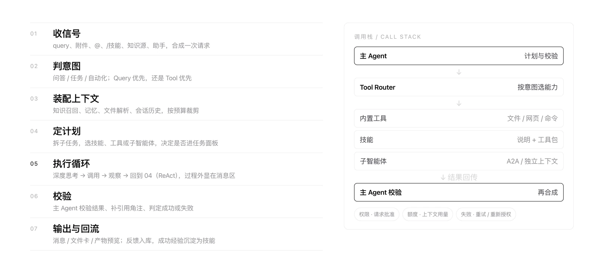
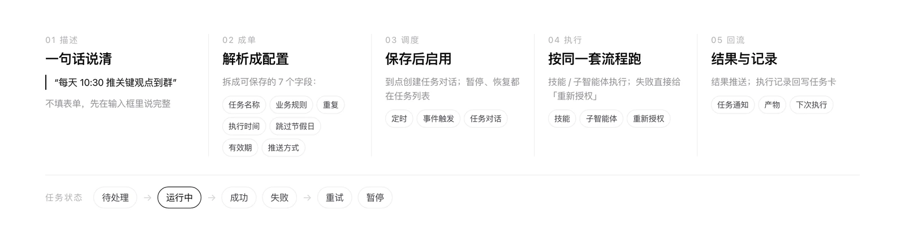

角色定位：我在这件事里的位置
PD 决定「做不做」，UXD 决定「长什么样」，两条线都不越位——但都要对同一个结果负责。
| 职责线 | 我负责的 | 关键产出 | 验收标准 |
|---|---|---|---|
| 产品判断 · PD | 定位与边界、能力取舍、北极星与多目标 | PRD、边界文档、四类状态枚举 | 每个需求都写清北极星、多目标取舍与不做什么 |
| 体验设计 · UXD | 入口收敛、状态化组件、异常 / 空态 / 阻断、反馈链路与埋点 | 交互稿、组件规范、状态规则、埋点定义 | 界面不承诺系统做不到的事；禁用态都有原因 |
| 落地协作 | 内审机制、研发与评测对齐、灰度发布与效果回填 | 内审规则、灰度开关、看板字段 | 高风险方案在开发前被拦下，效果能回填到看板 |
一条自检：如果我只能留下一样东西，那应该是可被复用的判断标准，而不是某一版界面。
权责区分：AI 不替人背锅
AI 负责「找、拼、改、校验」这类高频低风险环节；人负责「结论确认、权限与承诺」这类低频高风险环节。
| 角色 | 核心任务 | 频次 · 痛点 | AI 可介入（提效） | 人必须把关（兜底） |
|---|---|---|---|---|
| 一线员工 | 查制度与流程、找数据、写文档周报、总结群聊与会议 | 极高 · 找不到、重复劳动 | 意图识别、知识检索、总结提炼、起草与排版 | 结论是否可用、是否对外表达 |
| 部门主管 | 看团队使用、识别卡点、推动落地 | 中 · 信息不全、口径不一 | 汇总对比、使用情况、卡点预警 | 是否推广、是否对外承诺 |
| 合规 / IT | 权限、数据安全、审计与留痕 | 中 · 风险大、责任重 | 权限继承、桌面端本地处理、操作留痕 | 授权、审计、签字担责 |
这张表决定了后面每一个设计动作：凡是 AI 能做的，就不该让用户填表；凡是 人必须负责的，界面就不能替他点「确认」。
目标不是把功能做多，而是让用户只记一个入口、敢把任务交出去、失败时知道为什么。
五个判断——边界、骨架、入口与状态、数据、机制。每一个都先写结论，再写因果与取舍。
能力边界：先决定不做什么
Answer 只做「入口」，不做垂直场景；把垂域能力封装成工具，交给主 Agent 调度。
信息散在 WeLink 文档、群聊、知识中心、BI、代码仓库；跨系统办事要反复复制粘贴；敏感数据不敢上云。
一天里大量时间花在「找」和「搬」上，真正的判断被切碎；所以需要一个懂公司知识、能跨系统执行的通用入口。
如果通用助手什么都做，既做不深，又会和垂直业务团队正面冲突，用户面对多个助手只会选错一次就不再信任。
确立战略边界：Chat 是入口，垂域是能力。主 Agent 负责意图分发与权限校验；解决方案生成、合规审核等垂域助手经 A2A 封装为工具，由主 Agent 统一决策调用，办公与专业隔离。
这条边界写进 PRD 的第一页，后续所有需求都在这个框架下展开——用户只需要记住一个入口。
产品骨架：一个入口，四个「能」，三种形态
用「四个能」定义价值，用「三种形态」定义场景，用「四个全」定义底座。
用户的日常需求跨度极大——查资料、干活、造东西、让助手越用越懂自己，单一问答接不住。
拆成四个「能」：能查（知识 / 数据 / 会议 / 文档）、能干活（任务执行 / 自动化）、能创造（建技能 / 出成品）、能成长（记忆与偏好）。
使用场景的物理位置不同：在群里随手问、在电脑前深度工作、处理不方便上云的本地文件。
三种形态：Bot 最无缝、Web 最沉浸、Pro 最安全。三端共用一套知识与记忆，形态只决定「在哪用」，不决定「能不能用」。
四个「全」决定能力上限，四个「能」决定用户感知——用户只记得住「能干什么」，不会记得「接了什么」。
协作模型：六步循环
我把理想中的协作拆成六步。它不是一个一次性的流水线：任何一步发现信息不足，都要能回到上一步，或者停下来问人。
理解目标
用户要的是答案，还是一个能交出去的结果。
获取上下文
知识、文件、记忆、会话历史，按任务装配。
思考规划
拆子任务，决定用技能、工具还是子智能体。
执行任务
调用、观察、再判断，过程对用户可见。
验证结果
主 Agent 校验、补引用、标注不确定。
人机协作
确认、修改、撤回，或把这次执行沉淀为能力。
人机分工：AI 把事做完，人决定做到哪
AI 负责理解目标、补齐上下文、规划步骤、执行与自检；人负责定目标、给权限、做取舍、承担后果。这条分工线，决定了界面上什么该自动、什么该停下来。

我把系统的动作收敛成三类：自动执行（只读检索、知识问答、低风险生成）、需要确认（写操作、对外发送、授权与付费、覆盖或删除）、可以撤回（生成、发送、任务变更都留暂停 / 重试 / 撤销的出口）。
「请求批准」不是一个弹窗，而是人和 AI 之间的权限边界。边界越清楚，用户越敢把更大的任务交出去。
入口与状态：把承诺还给系统
互斥交给 Agent 判断，默认值交给用户显式选择——入口和状态，都不该替系统做承诺。
前端硬编码「选了助手就不能传文件 / 用技能」；知识源有 3 个入口，全量用户中仅约 700 人使用且极易选错。首页又自动恢复历史配置、勾选「企业知识」，把用户要用的工具顶掉；模型无输出时仍摆着「复制 / 分享」，任务失败仍有点赞。
任务直接报错，用户无法理解「为什么选了助手就不能传文件」；无感知失败与无效点击同时发生，解释成本高于功能本身，信任被一点点磨掉。
取消前端硬约束，改由 Agent 做意图识别与冲突消解；三个知识源入口收敛成一个下拉，并支持个人快捷入口。企业知识改为手动触发；Feedback 按任务状态收敛展示前提——无输出不显示复制与分享，失败不显示点赞，分享的对话整组隐藏反馈。
两个动作：入口收成一个，状态写成枚举


失败不是终点，是一个有下一步的状态
恢复不是一句「请重试」，而是一条有顺序的阶梯——重试、重规划、降级、转人工、回滚。完整规则见 13.1。
反馈闭环：把「情绪」变成「可定位的问题」
反馈的价值不在数量，在于能不能直接分派给一个负责人。
用户点踩后大多不填原因，旧流程「场景空值」导致人工分单效率低，这批记录被统一标记「暂不处理」。
反馈等于白收：产品拿不到可迭代的信息，只能凭印象排期，改完之后也无法证明有没有变好。
标签升级为「问题类型 + 所属模块」两级强制选择，选完自动映射模块跟进人；未选标签提交置灰；后台可配置（草稿 / 发布 / 回滚 / 兜底）。
两轮通用场景问卷，按场景而不是功能设计选项；同时按周汇总点踩、表单、团队、群聊四路反馈。7 月 1–20 日共 85 条（点踩 27 / 表单 11 / 团队 14 / 群聊 33），其中 BUG 22 条。四条链路一起看，才拼得出问题现场。
北极星定为「答案有效率」，拆成三层指标落到质量看板五个专题。反馈处理周报固定统计总量、BUG 数、处理率与负责人排行；产品把「点了没说原因」的记录单独计数，作为下一个动作的输入。
选完自动映射跟进人。未选标签，提交按钮置灰；旧版 6 个单层标签退场。后台支持两级标签、主表映射、草稿 / 发布 / 回滚与兜底，调整不再等研发发版。
质量看板 4 个专题：路由 / 回答 / 体验 / 安全，逐段定位问题。
这些指标怎么变成发布闸门，见 13.2。
机制设计：先画理想体验，再倒推架构
团队最大的风险不是做错，是把一年前的架构当成边界。
团队长期在现有功能上做正向迭代，把第一版架构当成不可动的约束，评审时大量时间花在理解名词与方案表面。
只优化表面，错过范式级机会；同一类短板（北极星不端到端、多目标冲突、架构易推倒）反复出现，却没人纠正。
内审推行强制顺序：先画理想链路 → 再推架构 → 最后按技术约束取舍；评审必须带「异常 / 空态 / 阻断 / 进度」四类稿。
策略要落到架构：机器人重构为 ReAct Agent + Toolset，子代理统一封装为工具，三端知识问答 Q3 前统一。这三项决策不是技术偏好，而是前面六步循环的必要条件。
一次内审完成 7 个需求评审，并把个案结论沉淀为团队标准（Top 10 意图、准确性优先于完整性、任务路由不显性化）。

推演里说过的每件事，在这里都要有一个看得见的样子——从主界面开始，逐个落到真实页面。
主界面：一个输入框，装下所有信号
入口只有一个——文件、技能、助手与自然语言在同一个框里共存，路由交给系统。

两个高频场景


入口收敛：三个入口，收成一个下拉
把「选入口」这件事从用户手里拿走——知识源是输入的一部分，不是场景的一部分。

先用最低成本的交互调整（1 周内上线），不重构整个信息架构；入口从三个收敛为一个，用户不再需要在入口层做判断。
任务回放：把任务能力，演一遍给用户看
看不懂就不会用。用 10–20 秒的回放替代一段产品介绍文案。

长任务最怕黑箱：不知道跑到哪、失败为什么、下一步做什么。处理过程被摊平成一行行可展开的记录——深度思考、使用技能、执行命令、阅读文件、使用子智能体、浏览网页；任务面板显示 3/4 步与耗时。
反馈标签：点踩之后，多问一句
不逼用户写小作文，只让他选一个类型；附件与日志自动带上，剩下的交给系统。

反馈从「收到情绪」变成「收到可定位的问题」，并自动分派到人；标签调整从「研发发版」降为「后台配置」——草稿 / 发布 / 回滚 / 兜底，异常时回退到最近有效版本。
体系设计：四层架构，七步工作流
单个场景好用不够，要让它可扩展、可预期、可恢复。
四层架构：层间只传四类东西
把界面拆开看，Answer 不是一排功能的集合，而是四层接力：入口收集信号、主 Agent 编排、能力层执行、支撑层兜底。层间只传四类东西：信号、指令、结果、事件。

七步工作流：一个 ReAct 循环
策略层的六步循环，落到系统里是七步：收信号、判意图、装配上下文、定计划、执行循环、校验、输出与回流。第 5 步会回到第 4 步反复循环——这也是 ReAct Agent 与「一次问答」最大的区别。

同一套工作流，入口不同，路由分五类：直答、调技能、派子智能体、拆任务、定时。
以一次真实任务为例：主 Agent 调用技能「每周工作总结」→ 执行 WeLink 命令拉日历 → 读 3 个文件 → 派子智能体「智能问数」分析 → 浏览网页补信息 → 主 Agent 合成周报；任务面板同步显示 3/4 步。
协同与沉淀：从一句话到一张任务卡
自动化任务把输入框、主 Agent、技能、任务面板、通知、反馈串成一条长链路，最能说明模块之间怎么交接。从一句自然语言到一张可暂停的任务卡，中间要过五个环节：描述、成单、调度、执行、回流。

上线不是终点。先定义怎么评，再定义失败怎么恢复，最后把每次 badcase 变成下一条评测用例。
可信体系：评测、恢复与迭代
Agent 的质量不能靠一次演示证明；要有离线评测、在线指标、人工评审三层证据，失败要有恢复阶梯，badcase 要能变成回归用例。
13.1 思考与恢复：失败时，下一步是什么
ReAct 不是让模型自由发挥：每一步都要有观察、校验和停止条件。计划—行动—观察—再计划；当信息足够、风险不允许、或必须由人做决定时，停下来。
我把停止条件收敛成三类：
思考过程只对用户暴露三件事：正在做什么、为什么停下来、下一步是什么；不展示无意义的「内心独白」。
失败不是异常，是产品的一部分。恢复要按阶梯走，而不是一句「请重试」：
| 失败模式 | 检测信号 | 恢复动作 | 用户看到什么 |
|---|---|---|---|
| 工具失败 | 超时 / 报错 / 返回空 | 重试 → 换工具 → 保留已完成步骤 | 「第 3 步失败，已保留前 2 步，可重试或继续」 |
| 授权过期 | 401 / 权限校验失败 | 就地重新授权，回到原任务 | 卡片上的「重新授权」，不用回设置里找 |
| 结果不可信 | 无引用 / 引用不匹配 / 低置信 | 补引用、标不确定、转人工核验 | 「这条结论缺少来源，建议核对原文」 |
| 任务跑偏 | 目标漂移 / 步骤重复 / 超出范围 | 暂停、改目标、重新规划 | 「当前方向可能偏了，要调整目标吗？」 |
| 上下文超限 | token 接近上限 / 历史过长 | 摘要、丢弃低相关上下文、拆任务 | 「已保留关键上下文，长对话已压缩」 |
恢复的三条原则：不假装确定（缺来源就说缺）、不从头再来（保留已完成步骤）、不让用户猜（每个失败态都有下一步）。
13.2 评测：四层评测，三道闸门
演示能骗人，评测集不能。四层评测分别回答：该不该做、做没做完、答得对不对、会不会出事。
| 评测层 | 评什么 | 怎么测 | 放行标准 |
|---|---|---|---|
| 意图与路由 | 该不该调工具、调哪个、是否强命中子代理 | Top 意图标注集 + 反例集；路由结果可解释 | 核心意图不低于基线；误路由能定位到规则 |
| 任务与工具 | 步骤完整、工具与参数正确、能否恢复 | 会话回放 + 自动断言 + 人工抽检 | 任务完成率不降；失败必须有恢复路径 |
| 答案与引用 | 准确、完整、可追溯、不编造 | 人工抽样 + 引用核验 + 对抗提问 | 引用缺失或编造 = 不通过 |
| 安全与权限 | 越权、敏感数据、合规红线 | 红队用例 + 权限矩阵 + 规则校验 | P0 零放行；越权即回滚 |
评测结果不直接等于发布，要过三道闸门：
指标不求多，要能定位到层：意图层看误路由，任务层看完成率与恢复步数，答案层看引用与准确，安全层看越权与 P0。任何一层出问题，都能回到对应的评测集。
13.3 迭代：把一次 badcase，变成一条回归用例
迭代不是「再调一版 prompt」，而是让每一次线上失败都变成一条可重复执行的用例。否则同类问题会以另一种形式再出现。
点踩两级标签，落到模块与意图；只收情绪不算闭环。
会话回放 + 日志 + 工具调用链，先还原现场再改。
query + 期望结果 + 判定规则，进入评测集。
prompt / 技能 / 工具 / 路由 / 界面，改在最靠近根因的一层。
全量评测集回归，再小流量验证；不过不发布。
关闭率、通过率、接管率回到看板，进入下一轮排序。
三个反模式：只修个案、不沉淀用例，同类问题会反复出现；改了不回归，修一个坏三个；指标不回填，永远无法证明变好。
项目复盘：做对了三件事，也留下继续验证的空间
能被证明的写进结果，没回填的明确标「待补」——不把过程当成果。
任务完成率、一次通过率、平均恢复步数、人工接管率、badcase 关闭率与回归通过率，以及入口迁移后的误选率、看回放 → 做同款的转化漏斗——指标已定义并埋点，但尚未回填成看板默认视图；「通用场景问卷结果」因权限未读取，相关结论未做定量承诺。
AI 体验设计，设计的是人与 AI 共同完成工作的规则。
如果重来一次，我会更早把「可撤回」和失败态做成系统能力，而不是逐页补按钮。下一步不是再加功能，而是把待补的指标回填成看板默认视图，让每一次设计判断都能被验证。